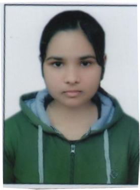

Jahnvee Srivastava

I am Jahnvee Srivastava, a first-year BTech IT student at Indira Gandhi Delhi Technical University for Women, passionate about coding and committed to hard work. Eager to explore the dynamic world of technology and contribute meaningfully to its advancements.
Educational Qualifications
- B.Tech in Information technology from IGDTUW
- Class 12th from St Thomas International School, Varanasi (Score 93.2%)
- Class 10th from Sant Atulanand Convent School, Varanasi (Score 94%)
Skills
- Data Structures and Algorithms
- C/C++
- HTML5
- CSS3
Academic and Extracurricular Achievements
- Qualified JEE Advanced 2023
- JEE Mains 2023 CRL - 39267
- National Level Gold Medalist and Black belt holder in Karate.
- Amateur poetess, a poem was featured under 'Top 100 poems of the year 2020' by the International Poetry Digest and
some works got published in two books.
Experience / Positions of Responsibility
- Google Developer Student Club - DSA Cohort mentee
- Microsoft Azure #Include her Cohort 4.0
- Mentor at Desh ke Mentors
- IGDTUW Cultural Fest Taarangana - Event Management Coordinator
- IGDTUW Finance Club Finivesta - Content Team Member
- IGDTUW Lifeskill Society Instinct - Content Team Member